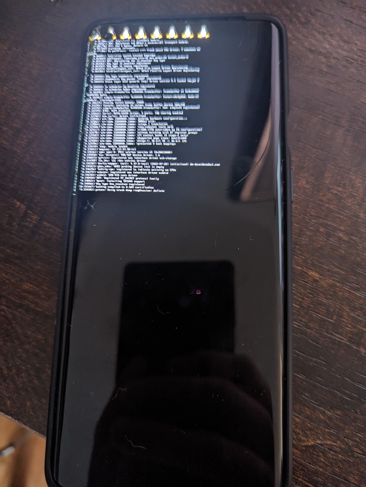

OnePlus 8 Pro (oneplus-instantnoodlep)
Jump to navigation
Jump to search
|
 . | |
| Manufacturer | OnePlus |
|---|---|
| Name | 8 Pro |
| Codename | oneplus-instantnoodlep |
| Released | 2020 |
| Category | testing |
| Original software | Android 10 |
| Hardware | |
| Chipset | Qualcomm Snapdragon 865 5G (SM8250) |
| CPU | Octa-core (1x2.84 GHz Cortex-A77 & 3x2.42 GHz Cortex-A77 & 4x1.80 GHz Cortex-A55) |
| GPU | Adreno 650 |
| Display | 1440 x 3168 pixels (~513 ppi density) |
| Storage | 128 or 256 GB |
| Memory | 8 GB or 12 GB |
| Architecture | aarch64 |
{kind=link}
| USB Networking |
Works
|
|---|---|
| Flashing |
Works
|
| Touchscreen |
Works
|
| Display |
Partial
|
| WiFi |
Works
|
| FDE |
Broken
|
| Mainline |
Works
|
| Battery |
Partial
|
| 3D Acceleration |
Broken
|
| Audio |
Broken
|
| Bluetooth |
Works
|
| Camera |
Broken
|
| Camera Flash | |
| GPS |
Broken
|
| Mobile data |
Broken
|
| SMS |
Broken
|
| Calls |
Broken
|
| USB OTG / USB-C Role switching |
Broken
|
| NFC |
Works
|
| Accelerometer |
Broken
|
|---|---|
| Magnetometer | |
| Ambient Light | |
| Proximity | |
| Hall Effect | |
| Barometer | |
| Power Sensor | |
| Keyboard | |
|---|---|
| Touchpad | |
| USB-A | |
| HDMI/DP | |
| Ir TX | |
| Ir RX | |
| Stylus | |
| Haptics | |
| Ethernet | |
| FOSS bootloader | |
Contributors
- Simplefluorine
Maintainer(s)
Users owning this device
- Simplefluorine (Notes: unlocked)
How to enter flash mode
Normally to fastboot: By pressing vol-, vol+, and power button.
When you are in initial boot stages however the above doesn't work, so try this: Poweroff vs EDL mode (I'm not sure which): Press vol-, vol+, and power button for about 10 sec Then to put in fastboot: Press vol- and power only
Prior / Dynamic Partitions Info
Before flashing anything:
Pull super in root adb shell
adb root adb pull /dev/block/by-name/super super.img
Android 10 launch, non-retro fit dynamic partitioning. See also PMOS wiki on this
Installation
Don't recommend use of downstream kernel unless you are debugging something. Choose mainline during ```pmbootstrap init```.
pmbootstrap install pmbootstrap flasher flash_dtbo pmbootstrap flasher flash_rootfs pmbootstrap flasher flash_kernel
Back to Android
img2simg super.img super-s.img fastboot flash super super-s.img
Flash Android as usual now
Partition layout
OnePlus8Pro:~$ ls -al /dev/block/bootdevice/by-name/
lrwxrwxrwx 1 root root 15 1970-02-03 17:53 ALIGN_TO_128K_1 -> /dev/block/sdd1 lrwxrwxrwx 1 root root 15 1970-02-03 17:53 ALIGN_TO_128K_2 -> /dev/block/sdf1 lrwxrwxrwx 1 root root 15 1970-02-03 17:53 abl_a -> /dev/block/sde8 lrwxrwxrwx 1 root root 16 1970-02-03 17:53 abl_b -> /dev/block/sde32 lrwxrwxrwx 1 root root 16 1970-02-03 17:53 abl_log -> /dev/block/sde67 lrwxrwxrwx 1 root root 16 1970-02-03 17:53 aging_kernel -> /dev/block/sde64 lrwxrwxrwx 1 root root 16 1970-02-03 17:53 aging_mod -> /dev/block/sde65 lrwxrwxrwx 1 root root 16 1970-02-03 17:53 android_log -> /dev/block/sde69 lrwxrwxrwx 1 root root 15 1970-02-03 17:53 aop_a -> /dev/block/sde1 lrwxrwxrwx 1 root root 16 1970-02-03 17:53 aop_b -> /dev/block/sde25 lrwxrwxrwx 1 root root 16 1970-02-03 17:53 apdp -> /dev/block/sde51 lrwxrwxrwx 1 root root 15 1970-02-03 17:53 bluetooth_a -> /dev/block/sde5 lrwxrwxrwx 1 root root 16 1970-02-03 17:53 bluetooth_b -> /dev/block/sde29 lrwxrwxrwx 1 root root 16 1970-02-03 17:53 boot_a -> /dev/block/sde11 lrwxrwxrwx 1 root root 16 1970-02-03 17:53 boot_b -> /dev/block/sde35 lrwxrwxrwx 1 root root 15 1970-02-03 17:53 cdt -> /dev/block/sdd2 lrwxrwxrwx 1 root root 16 1970-02-03 17:53 cmnlib64_a -> /dev/block/sde13 lrwxrwxrwx 1 root root 16 1970-02-03 17:53 cmnlib64_b -> /dev/block/sde37 lrwxrwxrwx 1 root root 16 1970-02-03 17:53 cmnlib_a -> /dev/block/sde12 lrwxrwxrwx 1 root root 16 1970-02-03 17:53 cmnlib_b -> /dev/block/sde36 lrwxrwxrwx 1 root root 16 1970-02-03 17:53 config -> /dev/block/sda11 lrwxrwxrwx 1 root root 15 1970-02-03 17:53 ddr -> /dev/block/sdd3 lrwxrwxrwx 1 root root 16 1970-02-03 17:53 devcfg_a -> /dev/block/sde14 lrwxrwxrwx 1 root root 16 1970-02-03 17:53 devcfg_b -> /dev/block/sde38 lrwxrwxrwx 1 root root 16 1970-02-03 17:53 devinfo -> /dev/block/sde49 lrwxrwxrwx 1 root root 16 1970-02-03 17:53 dip -> /dev/block/sde50 lrwxrwxrwx 1 root root 15 1970-02-03 17:53 dsp_a -> /dev/block/sde9 lrwxrwxrwx 1 root root 16 1970-02-03 17:53 dsp_b -> /dev/block/sde33 lrwxrwxrwx 1 root root 16 1970-02-03 17:53 dtbo_a -> /dev/block/sde17 lrwxrwxrwx 1 root root 16 1970-02-03 17:53 dtbo_b -> /dev/block/sde41 lrwxrwxrwx 1 root root 16 1970-02-03 17:53 featenabler_a -> /dev/block/sde22 lrwxrwxrwx 1 root root 16 1970-02-03 17:53 featenabler_b -> /dev/block/sde46 lrwxrwxrwx 1 root root 15 1970-02-03 17:53 frp -> /dev/block/sda5 lrwxrwxrwx 1 root root 15 1970-02-03 17:53 fsc -> /dev/block/sdf5 lrwxrwxrwx 1 root root 15 1970-02-03 17:53 fsg -> /dev/block/sdf4 lrwxrwxrwx 1 root root 15 1970-02-03 17:53 hyp_a -> /dev/block/sde3 lrwxrwxrwx 1 root root 16 1970-02-03 17:53 hyp_b -> /dev/block/sde27 lrwxrwxrwx 1 root root 16 1970-02-03 17:53 hyp_log -> /dev/block/sde71 lrwxrwxrwx 1 root root 16 1970-02-03 17:53 imagefv_a -> /dev/block/sde23 lrwxrwxrwx 1 root root 16 1970-02-03 17:53 imagefv_b -> /dev/block/sde47 lrwxrwxrwx 1 root root 16 1970-02-03 17:53 kernel_log -> /dev/block/sde68 lrwxrwxrwx 1 root root 16 1970-02-03 17:53 keymaster_a -> /dev/block/sde10 lrwxrwxrwx 1 root root 16 1970-02-03 17:53 keymaster_b -> /dev/block/sde34 lrwxrwxrwx 1 root root 15 1970-02-03 17:53 keystore -> /dev/block/sda4 lrwxrwxrwx 1 root root 16 1970-02-03 17:53 limits -> /dev/block/sde54 lrwxrwxrwx 1 root root 16 1970-02-03 17:53 limits-cdsp -> /dev/block/sde55 lrwxrwxrwx 1 root root 16 1970-02-03 17:53 logdump -> /dev/block/sde57 lrwxrwxrwx 1 root root 16 1970-02-03 17:53 logfs -> /dev/block/sde56 lrwxrwxrwx 1 root root 16 1970-02-03 17:53 logo_a -> /dev/block/sde24 lrwxrwxrwx 1 root root 16 1970-02-03 17:53 logo_b -> /dev/block/sde48 lrwxrwxrwx 1 root root 15 1970-02-03 17:53 mdm1m9kefs1 -> /dev/block/sdf7 lrwxrwxrwx 1 root root 15 1970-02-03 17:53 mdm1m9kefs2 -> /dev/block/sdf8 lrwxrwxrwx 1 root root 15 1970-02-03 17:53 mdm1m9kefs3 -> /dev/block/sdf6 lrwxrwxrwx 1 root root 15 1970-02-03 17:53 mdm1m9kefsc -> /dev/block/sdf9 lrwxrwxrwx 1 root root 16 1970-02-03 17:53 mdm1oemnvbktmp -> /dev/block/sde63 lrwxrwxrwx 1 root root 15 1970-02-03 17:53 mdm_oem_dycnvbk -> /dev/block/sda7 lrwxrwxrwx 1 root root 15 1970-02-03 17:53 mdm_oem_stanvbk -> /dev/block/sda8 lrwxrwxrwx 1 root root 15 1970-02-03 17:53 mdmddr -> /dev/block/sdd4 lrwxrwxrwx 1 root root 15 1970-02-03 17:53 mdtp_a -> /dev/block/sde7 lrwxrwxrwx 1 root root 16 1970-02-03 17:53 mdtp_b -> /dev/block/sde31 lrwxrwxrwx 1 root root 15 1970-02-03 17:53 mdtpsecapp_a -> /dev/block/sde6 lrwxrwxrwx 1 root root 16 1970-02-03 17:53 mdtpsecapp_b -> /dev/block/sde30 lrwxrwxrwx 1 root root 16 1970-02-03 17:53 metadata -> /dev/block/sda19 lrwxrwxrwx 1 root root 15 1970-02-03 17:53 misc -> /dev/block/sda3 lrwxrwxrwx 1 root root 15 1970-02-03 17:53 modem_a -> /dev/block/sde4 lrwxrwxrwx 1 root root 16 1970-02-03 17:53 modem_b -> /dev/block/sde28 lrwxrwxrwx 1 root root 15 1970-02-03 17:53 modemdump -> /dev/block/sda9 lrwxrwxrwx 1 root root 15 1970-02-03 17:53 modemst1 -> /dev/block/sdf2 lrwxrwxrwx 1 root root 15 1970-02-03 17:53 modemst2 -> /dev/block/sdf3 lrwxrwxrwx 1 root root 16 1970-02-03 17:53 msadp -> /dev/block/sde52 lrwxrwxrwx 1 root root 16 1970-02-03 17:53 multiimgoem_a -> /dev/block/sde19 lrwxrwxrwx 1 root root 16 1970-02-03 17:53 multiimgoem_b -> /dev/block/sde43 lrwxrwxrwx 1 root root 16 1970-02-03 17:53 multiimgqti_a -> /dev/block/sde20 lrwxrwxrwx 1 root root 16 1970-02-03 17:53 multiimgqti_b -> /dev/block/sde44 lrwxrwxrwx 1 root root 16 1970-02-03 17:53 op1 -> /dev/block/sde66 lrwxrwxrwx 1 root root 16 1970-02-03 17:53 op2 -> /dev/block/sda10 lrwxrwxrwx 1 root root 16 1970-02-03 17:53 opproduct_a -> /dev/block/sda12 lrwxrwxrwx 1 root root 16 1970-02-03 17:53 opproduct_b -> /dev/block/sda13 lrwxrwxrwx 1 root root 15 1970-02-03 17:53 param -> /dev/block/sda6 lrwxrwxrwx 1 root root 15 1970-02-03 17:53 persist -> /dev/block/sda2 lrwxrwxrwx 1 root root 16 1970-02-03 17:53 qsee_log -> /dev/block/sde70 lrwxrwxrwx 1 root root 16 1970-02-03 17:53 qupfw_a -> /dev/block/sde15 lrwxrwxrwx 1 root root 16 1970-02-03 17:53 qupfw_b -> /dev/block/sde39 lrwxrwxrwx 1 root root 16 1970-02-03 17:53 rawdump -> /dev/block/sda22 lrwxrwxrwx 1 root root 16 1970-02-03 17:53 recovery_a -> /dev/block/sda15 lrwxrwxrwx 1 root root 16 1970-02-03 17:53 recovery_b -> /dev/block/sda16 lrwxrwxrwx 1 root root 16 1970-02-03 17:53 reserve1 -> /dev/block/sde72 lrwxrwxrwx 1 root root 16 1970-02-03 17:53 reserve2 -> /dev/block/sde73 lrwxrwxrwx 1 root root 16 1970-02-03 17:53 reserve3 -> /dev/block/sde74 lrwxrwxrwx 1 root root 16 1970-02-03 17:53 reserve4 -> /dev/block/sde75 lrwxrwxrwx 1 root root 16 1970-02-03 17:53 secdata -> /dev/block/sde60 lrwxrwxrwx 1 root root 16 1970-02-03 17:53 spunvm -> /dev/block/sde53 lrwxrwxrwx 1 root root 15 1970-02-03 17:53 ssd -> /dev/block/sda1 lrwxrwxrwx 1 root root 16 1970-02-03 17:53 storsec_a -> /dev/block/sde58 lrwxrwxrwx 1 root root 16 1970-02-03 17:53 storsec_b -> /dev/block/sde76 lrwxrwxrwx 1 root root 16 1970-02-03 17:53 super -> /dev/block/sda14 lrwxrwxrwx 1 root root 15 1970-02-03 17:53 tz_a -> /dev/block/sde2 lrwxrwxrwx 1 root root 16 1970-02-03 17:53 tz_b -> /dev/block/sde26 lrwxrwxrwx 1 root root 16 1970-02-03 17:53 uefisecapp_a -> /dev/block/sde18 lrwxrwxrwx 1 root root 16 1970-02-03 17:53 uefisecapp_b -> /dev/block/sde42 lrwxrwxrwx 1 root root 16 1970-02-03 17:53 uefivarstore -> /dev/block/sde59 lrwxrwxrwx 1 root root 16 1970-02-03 17:53 userdata -> /dev/block/sda23 lrwxrwxrwx 1 root root 16 1970-02-03 17:53 vbmeta_a -> /dev/block/sde16 lrwxrwxrwx 1 root root 16 1970-02-03 17:53 vbmeta_b -> /dev/block/sde40 lrwxrwxrwx 1 root root 16 1970-02-03 17:53 vbmeta_system_a -> /dev/block/sda17 lrwxrwxrwx 1 root root 16 1970-02-03 17:53 vbmeta_system_b -> /dev/block/sda18 lrwxrwxrwx 1 root root 16 1970-02-03 17:53 vm-data -> /dev/block/sde62 lrwxrwxrwx 1 root root 16 1970-02-03 17:53 vm-keystore -> /dev/block/sde61 lrwxrwxrwx 1 root root 16 1970-02-03 17:53 vm-linux_a -> /dev/block/sde21 lrwxrwxrwx 1 root root 16 1970-02-03 17:53 vm-linux_b -> /dev/block/sde45 lrwxrwxrwx 1 root root 16 1970-02-03 17:53 vm-system_a -> /dev/block/sda20 lrwxrwxrwx 1 root root 16 1970-02-03 17:53 vm-system_b -> /dev/block/sda21 lrwxrwxrwx 1 root root 15 1970-02-03 17:53 xbl_a -> /dev/block/sdb1 lrwxrwxrwx 1 root root 15 1970-02-03 17:53 xbl_b -> /dev/block/sdc1 lrwxrwxrwx 1 root root 15 1970-02-03 17:53 xbl_config_a -> /dev/block/sdb2 lrwxrwxrwx 1 root root 15 1970-02-03 17:53 xbl_config_b -> /dev/block/sdc2